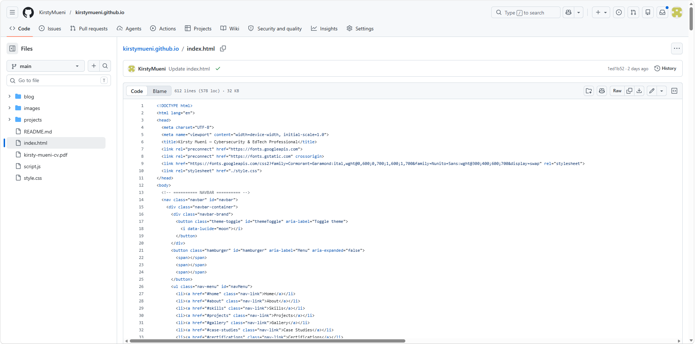
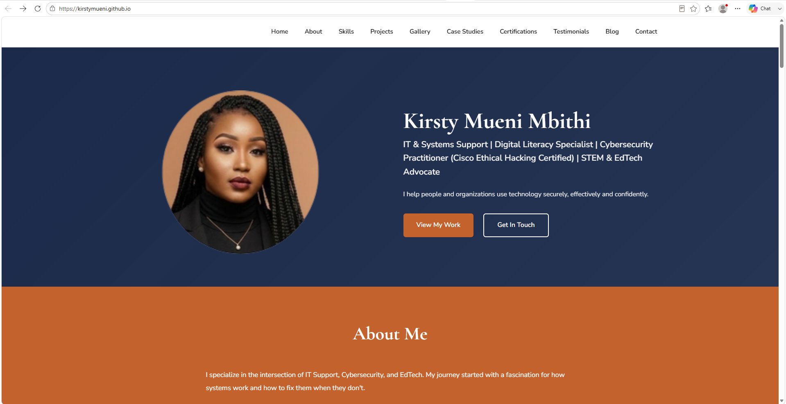

Project Overview
Developing responsive and secure web applications using modern technologies and best practices. The flagship build is this personal portfolio website, designed and developed from scratch with semantic HTML, modern CSS, and vanilla JavaScript — combining clean design, strong performance, and intuitive user experience.
The work spans the full front-end lifecycle: designing the layout and design system, building interactive components, and refining responsiveness so the site feels polished on every screen size.
Key Responsibilities
- Designed responsive, mobile-first layouts and a consistent design system.
- Implemented a theme-aware interface with a light/dark mode toggle.
- Built interactive components: project filters, gallery modal, and image lightbox.
- Wrote semantic, accessible HTML and well-structured CSS.
- Optimized performance through lazy loading and lean assets.
- Tested and refined the experience across devices and browsers.
Pages & Features Built
- Responsive Personal Portfolio Website
- Theme-Aware Design System (CSS Variables)
- Interactive Project Filters
- Image Gallery with Lightbox Navigation
- Static Blog & Project Writeups
- Smooth Scroll & Back-to-Top Controls
Tools & Technologies Used
Design & Development Activities
- Wireframing layouts and UX flows in Figma
- Building mobile-first responsive layouts
- Implementing theming with CSS custom properties
- Writing vanilla JavaScript for interactive components
- Testing across phones, tablets, and desktops
- Iterating on accessibility and performance
Impact & Outcomes
- A fast, accessible, fully responsive portfolio website.
- A reusable design system keeping the site visually consistent.
- Interactive showcases for projects, gallery, and blog.
- A clean, maintainable codebase built on web standards.
Project Evidence


Skills Demonstrated
- Responsive Web Design
- Modern Front-End Development
- UX / UI Design
- CSS Theming & Design Systems
- Vanilla JavaScript
- Web Accessibility
- Performance Optimization
Project Outcome
This project strengthened practical experience across the full front-end lifecycle, from design and layout to interactive behaviour and deployment. It also enhanced the ability to deliver responsive, accessible, and performant web applications using clean, standards-based code that remains easy to maintain and extend.